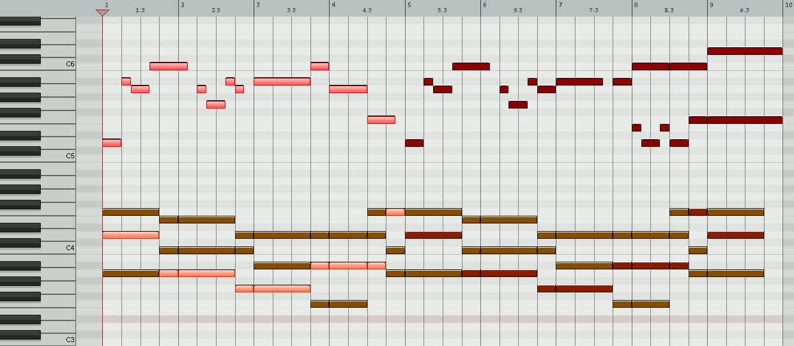

Vocals: The Ultimate Checklist for Composing a Great Melody
-
Write out the scale you used for your chord progression (see Chords PDF):
1 2 ♭3 4 5 ♭6 ♭7 8 D E F G A B♭ C D -
Write out your chord progression AKA harmonic story, then begin telling your melodic story over it.
MELODY CHECKLIST
Use all these hacks to compose a great melody! (see example below)
| Hack & Definition | Why & How |
|---|---|
| Harmonic notes (in chord, wanna stay put) Non-harmonic notes (not in chord, wanna move) | Why: Tension and resolution gives your melody momentum How: Use a combination of harmonic and non-harmonic notes |
| Avoid moving in perfect 4ths (five semitones) and perfect 5ths (seven semitones) | Why: These intervals vibrate too similarly, so sound weak/boring How: Avoid ’em, but if you get one, break it up with another note |
| Motifs (short musical ideas, melodic or rhythmic) | Why: Repeating them gives your melody structure and familiarity How: Look out for anything catchy emerging as you experiment |
| Large intervals (6ths & 7ths) | Why: Large intervals grab attention and create interest How: Use small intervals for flow, and large intervals for drama |
| Note values (length/duration of each note) | Why: Different length notes give your melody life and energy How: Play around with different note durations on the MIDI grid |
| Syncopation (accenting an off-beat) | Why: A few unpredictable off-beat notes create excitement How: Use on-beat notes for impact, and off-beat notes to thrill |
| Phrasing (framing a segment with rests/silence) | Why: Breaking up melodies into chunks makes them catchier How: Sing your melody and use rests where you want to breathe |

| Chord progression (example) | Vocal melody (highlighted in MIDI above), with spelling spelling is heard & written in relation to each chord's root note (highlighted in MIDI chords above) |
|---|---|
| I - Dm/A | D (1) → B♭ (♭6) → A (5) → C (♭7) holds over to next chord... |
| V - Am | …becoming a C (♭3) → A (1) → G (♭7) → B♭ (♭2) |
| IV - Gsus4 to Gm | A (2) → B♭ (♭3) |
| ♭VI - B♭maj/F to B♭maj | C (2) → A (7) → F (5) briefly holds over to next chord... |
| ♭III - Fmaj/A | …becoming a F (1) |